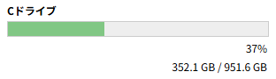
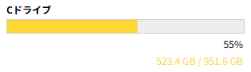
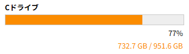
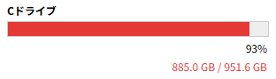
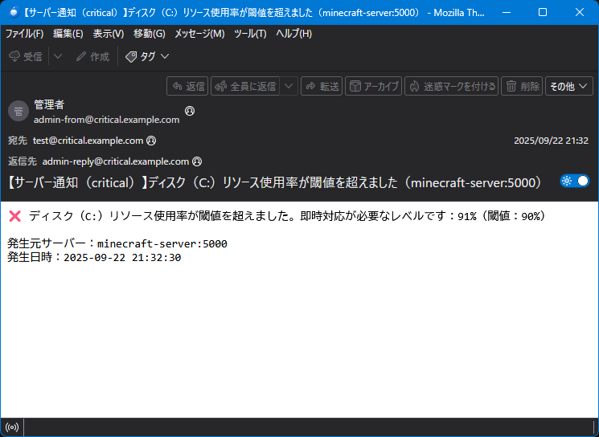
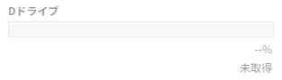
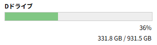
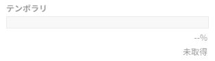
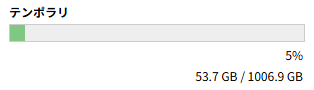

【ディスクリソース監視】
はじめに
Windows系では Cドライブや Dドライブ、Linux系ではルート・ホーム・ログなどのラベルで表示され、使用率や容量サイズが棒グラフで可視化されます。
本記事では、ディスクリソースの表示仕様と、設定ファイルによる閾値・通知制御の仕組みについて解説します。
色分け表示の特徴
- 文字色や棒グラフの色はパーセンテージで制御されます。
- 色の変化は、以下のように状態の深刻度を視覚的に伝えます。
| 状態 | 閾値 | 背景色 | 意味 |
|---|---|---|---|
| 通常 | ～warn未満 | 緑系 | 安定稼働中 |
| warn | warn以上～alert未満 | 黄系 | 中程度の負荷（注意） |
| alert | alert以上～critical未満 | 橙系 | 高負荷（警戒） |
| critical | critical以上 | 赤系 | 過負荷（即対応推奨） |
ディスクリソース監視の概要
- ドライブ単位で使用率・容量サイズを表示
- 棒グラフと数値に warn／alert／critical の色分け

⇒
通常（安定稼働中）

⇒
warn（注意レベル）

⇒
alert（警戒レベル）

⇒
critical（即対応推奨レベル）通知メールについて
- 通知メールは各ドライブの 使用率が各閾値に到達した瞬間（上昇時）にのみ 発火します。
- 具体的には、使用率が
warn → alert → criticalと上昇するタイミングで、それぞれ1回ずつ通知されます。 - 使用率が下降して閾値を下回っても、通知は発生しません（通知の過剰発生を防ぐため）。
- 通知内容には、発生時刻・稼働率・対象サーバーなどが含まれます。
以下はメール内容の例です。

メールの件名や本文は以下のファイルで変更できます。
/**
* 通知メール関連
*/
return [
/**
* criticalレベル
*/
'MAIL_SUBJECT_CRITICAL' => '【サーバー通知（critical）】:typeリソース使用率が閾値を超えました（:server）',
'MAIL_BODY_CRITICAL' => '❌ :typeリソース使用率が閾値を超えました。即時対応が必要なレベルです：:usage%（閾値：:threshold%）'."\r\n\r\n".'発生元サーバー：:server'."\r\n".'発生日時：:timestamp',
/**
* alertレベル
*/
'MAIL_SUBJECT_ALERT' => '【サーバー通知（alert）】:typeリソース使用率が閾値を超えました（:server）',
'MAIL_BODY_ALERT' => '🚨 :typeリソース使用率が閾値を超えました。高負荷状態です：:usage%（閾値：:threshold%）'."\r\n\r\n".'発生元サーバー：:server'."\r\n".'発生日時：:timestamp',
/**
* warnレベル
*/
'MAIL_SUBJECT_WARN' => '【サーバー通知（warn）】:typeリソース使用率が閾値を超えました（:server）',
'MAIL_BODY_WARN' => '⚠️ :typeリソース使用率が閾値を超えたため注意が必要です：:usage%（閾値：:threshold%）'."\r\n\r\n".'発生元サーバー：:server'."\r\n".'発生日時：:timestamp'
];
| プレースホルダ | 内容 |
|---|---|
| :type | CPU or メモリ or ディスク |
| :server | サーバー名（<ホスト名>:<ポート番号>） |
| :usage | 使用率（%） |
| :threshold | 閾値（%） |
| :timestamp | 発生日時 |
閾値と通知の設定
GUIランチャーでは、ディスクリソース監視に関する閾値と通知設定を、外部の設定ファイル（setting/launcher.php）によって柔軟に制御できます。
この設計により、運用者は環境やポリシーに応じて、負荷の検知タイミングや通知の発火条件を明示的に定義できます。
ご覧の通り、Windows環境の場合は
Windows上での監視対象のドライブレターは
Linux上での監視対象のディレクトリは
なお、画面表示用のラベルは
※ emailキーにnullを設定した項目は通知されません
また
※ 全キーにnullを設定すると通知されません。
この設計により、運用者は環境やポリシーに応じて、負荷の検知タイミングや通知の発火条件を明示的に定義できます。
return [
・
・
・
//--------------------------------------------------------------------------
// GUIモード用
//--------------------------------------------------------------------------
// 各種リソース設定
'resources' => [
・
・
・
// [Windows用]ディスクリソース
'disk_windows' => [
// Cドライブ
'C:' => [
// ディスクラベル
'label' => 'Cドライブ',
// 警告レベルの設定
'warn' => [ 'threshold' => 50, 'email' => null ],
// アラートレベルの設定
'alert' => [ 'threshold' => 75, 'email' => null ],
// クリティカルレベルの設定
'critical' => [ 'threshold' => 90, 'email' => null ]
],
// Dドライブ
'D:' => [
// ディスクラベル
'label' => 'Dドライブ',
// 警告レベルの設定
'warn' => [ 'threshold' => 50, 'email' => null ],
// アラートレベルの設定
'alert' => [ 'threshold' => 75, 'email' => null ],
// クリティカルレベルの設定
'critical' => [ 'threshold' => 90, 'email' => null ]
],
// Eドライブ
'E:' => [
// ディスクラベル
'label' => 'Eドライブ',
// 警告レベルの設定
'warn' => [ 'threshold' => 50, 'email' => null ],
// アラートレベルの設定
'alert' => [ 'threshold' => 75, 'email' => null ],
// クリティカルレベルの設定
'critical' => [ 'threshold' => 90, 'email' => null ]
]
]
・
・
・
]
];
return [
・
・
・
//--------------------------------------------------------------------------
// GUIモード用
//--------------------------------------------------------------------------
// 各種リソース設定
'resources' => [
・
・
・
// [Linux用]ディスクリソース
'disk_linux' => [
// ルート
'/' => [
// ディスクラベル
'label' => 'ルート',
// 警告レベルの設定
'warn' => [ 'threshold' => 50, 'email' => null ],
// アラートレベルの設定
'alert' => [ 'threshold' => 75, 'email' => null ],
// クリティカルレベルの設定
'critical' => [ 'threshold' => 90, 'email' => null ]
],
// ホーム
'/home' => [
// ディスクラベル
'label' => 'ホーム',
// 警告レベルの設定
'warn' => [ 'threshold' => 50, 'email' => null ],
// アラートレベルの設定
'alert' => [ 'threshold' => 75, 'email' => null ],
// クリティカルレベルの設定
'critical' => [ 'threshold' => 90, 'email' => null ]
],
// ログ
'/var' => [
// ディスクラベル
'label' => 'ログ',
// 警告レベルの設定
'warn' => [ 'threshold' => 50, 'email' => null ],
// アラートレベルの設定
'alert' => [ 'threshold' => 75, 'email' => null ],
// クリティカルレベルの設定
'critical' => [ 'threshold' => 90, 'email' => null ]
]
],
・
・
・
]
];
ご覧の通り、Windows環境の場合は
resources.disk_windows の配下にドライブごとの定義が、Linux環境の場合は resources.disk_linux の配下にディレクトリごとの定義が入っており、ドライブごとの定義は自由に追加／削除できます。Windows上での監視対象のドライブレターは
<アルファベット>: の形式でresources.disk_windowsキー直下に定義します。Linux上での監視対象のディレクトリは
/<ディレクトリのパス> の形式でresources.disk_linuxキー直下に定義します。なお、画面表示用のラベルは
labelキーに定義します。labelキー以外の定義に関しては、以下のように CPU リソースやメモリリソースと同じ構成になっています。| キー | 閾値設定のキー | 通知メール設定のキー |
|---|---|---|
| warn | warn.threshold | warn.email |
| alert | alert.threshold | alert.email |
| critical | critical.threshold | critical.email |
また
email キー内で以下のヘッダ情報を指定できます。| キー | 内容 |
|---|---|
| to | 宛先メールアドレス |
| from_address | fromヘッダのアドレス（fromヘッダを指定する時は必須） |
| from_name | fromヘッダの名前 |
| reply_to | replyヘッダのアドレス |
ディスクの動的反映
- 接続時にリアルタイムで有効化
- 設定済みの閾値・通知が即時反映される
Windwosの場合
リムーバブルディスクを接続した時、以下のように未取得状態から有効状態になります。

未取得状態⇒

有効状態有効状態⇒
未取得状態Linuxの場合
ディレクトリを追加した時、以下のように未取得状態から有効状態になります。

未取得状態⇒

有効状態有効状態⇒
未取得状態おわりに
このランチャーはクロスプラットフォーム対応なので、Windows上のWSLなどの仮想環境内でもご利用いただけますが、その場合は他の監視ツールと同様に、仮想環境内のリソースのみが監視対象となりますのでご注意ください。
Windows全体のリソースを監視する場合は、PowerShellなどを使用し、Windowsホスト上でのご利用をおすすめします。
Windows全体のリソースを監視する場合は、PowerShellなどを使用し、Windowsホスト上でのご利用をおすすめします。